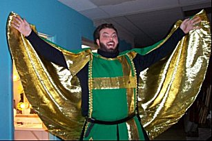
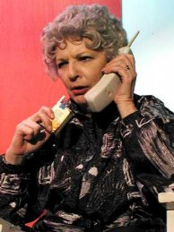
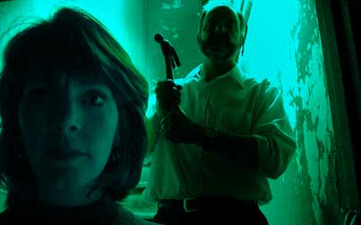
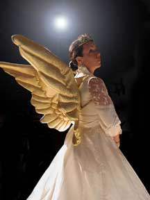
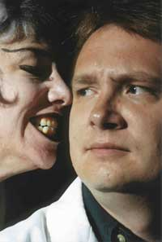
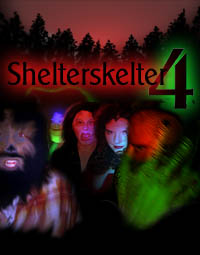

| June 2002: Ran lights for the Shelterskelter 7 (cast party) |
|
|  | September 2002: Sir Sagramore in Camelot at Bellevue Little Theatre. |
| June 2002: Ran lights for the Marriage of Bette and Boo |

|

| April 2002: Ran lights for Love is Strange |
| Feb 2002: Light operator, etc. for first-ever From Shelterbelt With Love |  |

|
|  | Fall 2001: House mgr, lights for Shelter Skelter 6. |
|  |

| August 2001: House mgr, sound and lights for Precious Few. |
| April 2001: Work conflict kept me away for opening weekend, but after that I pitched in in all the usual miscellaneous capacities. |

|

 Fall 2000: House mgr, sound for Shelter Skelter 5.
Photos gallery
including TAG night out. |
 Spring 2000: Stage manager / sound operator for Cyber:
Spring 2000: Stage manager / sound operator for Cyber: |
 Summer 2000: Stage manager, sound/light operator for Spider:
Summer 2000: Stage manager, sound/light operator for Spider:
|
|
 October 1999: Lights for Shelter Skelter 4: |

 December 1999: Actor in Stocking Stuffers 4: |